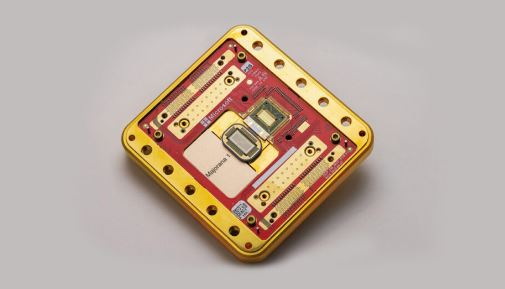

2022-02-09 05:30:00
潘建偉集團的發跡，始自量子通信；而量子通信的所謂價值，只在於能在光纖和微波階段抵抗量子計算的破密。顯然這裏的邏輯前提是1）量子計算破密是真實的威脅；2）量子通信能在全系統都做到國安級的保密。然而量子通信其實需要遠遠更複雜、更容易被Compromise破解的中繼站、發信站和接收站，這是過去十幾年來旅居海外的良心科學家反復試圖解釋的事實，雖然被科技部和中國學閥界堅持聽而不聞、視而不見，但稍微有點基本理性邏輯能力的人應該可以簡單看出，既然通信保密的安全程度由最弱環節決定，而量子通信無法滿足前述的條件（2），那麽它反而是得不償失的。
上面這個簡單論證，正是量子通信在股市一番炒作收割（被估計為幾十億，參見《潘建偉的億萬富豪之路》；我無法獨立驗證這篇文章的内容，但既然它談的是股市運作，必然有公共資訊可查，我鼓勵國内做金融的讀者去試圖深究檢驗；如果一個民主黨派的中央委員真的可以如此公然詐欺股民以自肥，那的確是對習近平反腐政策的莫大諷刺）之後，就忽然銷聲匿跡的幕後因素之一。
但另一個讓量子通信虎頭蛇尾的原因，卻遠遠更爲重要，亦即邏輯前提（1）也無法滿足。量子計算能破解古典密碼（其實只限於基於Prime Factorization素因數分解的加密方法，例如RSA，一個發明於1977年的公開碼系統）這個説法的理論基礎，來自1994年發明的Shor’s Algorithm。當時立刻有資本炒作的典型樂觀估計，號稱在2005年前後就能成功。但是28年過去了，實際進展是從2001年的IBM量子計算機有7個qubit，到2021年底是127個（不同團隊選用不同的技術路綫，在相干性和穩定性上有不同的取捨偏重，qubit數目做大的難易也就有所差異，橫向比較只能看數量級，但這裏是同一家公司在時間軸上的縱向對比，沒有前述的問題）；與其同時，誠實的專家估算卻認爲還差8個數量級（參見前文《再談Google的量子霸權》）。即使我們相信美國炒作量子計算的領頭羊Google自己的最新公關（參見《Google wants to build a useful quantum computer by 2029》），到2029年也只能提升4個數量級（亦即摩爾定律的2.5倍，IBM過去20年實際進展速度的9倍多），届時可能有若干未定的“用途”（“Useful”，又是典型的資本炒作公關用語，不排除是用十億美元的新機器來超越一美元的既有技術；不論如何，絕對不是跑Shor’s Algorithm來破解RSA那個真正的標靶）。換句話説，量子計算在2030年之前破解RSA的可能性是infinitesimal。
最近幾年關心量子通信和計算這個話題的人，可能會注意到一個乍看之下非常令人費解的奇異現象，也就是美國的國家實驗室以及軍方都對兩者興趣缺缺，即使在中國高調炒作墨子衛星的時候，連平時蠢話連篇的一批國會議員都沒有隨之起舞。這裏有兩個可能的解釋：1）美國有一個未公佈的量子通信計劃；2）美國有一個讓量子通信毫無用處的計劃。然而量子通信不但是純防禦性的，而且需要明顯、全面、昂貴的基建來配合，根本沒有保密的必要和可能，就連對軍事科技保密成性的中方都明白這個道理，急著和中國比高的美國政客怎麽可能主動放棄大好的公關機會？於是簡單邏輯可以達成結論：美國内部評估100%確定量子通信是騙人的勾當，錢和人應該投入其他有真正意義的科研方向（大家可以停下來體會一下：一個可以憑空印5萬億鈔票的霸權國家明白不能浪費錢，另一個對科研人員極度摳門的新興國家卻全力往錢坑裏扔；這裏是NSA幾年前就公開的評估，參見《Quantum Key Distribution (QKD) and Quantum Cryptography (QC)》；換句話説，美國的間諜組織願意誠實檢討技術優劣、為國家省錢，中國的學術機構卻靠欺騙國家社會來謀私利）。這個正確科研方向並不是什麽莫須有、玄之又玄的絕對機密，而是密碼學的基本功，稍微有點專業知識的人都可以理解：既然量子通信的前提是量子計算，而量子計算的前提是Shor’s Algorithm破解RSA，那麽只要淘汰素因數分解加密法，量子通信和量子計算就失去實用價值。
美國準備淘汰素因數分解加密法，是從Shor’s Algorithm一出現就開始的，兩年後的1996年就有了第一個版本叫做NTRU，它背後的數學基礎用所謂的Lattice Theory格論來取代素因數分解。在2005年，發明了改進版LWE（Learning with Errors）；到2009年，完成嚴謹性論證，從數學上證明對任何量子計算（包括還未發明的新方法，除非徹底解答格論的所有計算問題，參見這篇《Nature》的回顧總結《The race to save the Internet from quantum hackers》）有完全抵抗力。現在不但美國的NIST（National Institute of Standards and Technology）忙著選拔“Post Quantum Cryptography”“後量子加密法”的標準（細節也是很重要的，歷史上NSA曾經矇騙NIST選用一個有後門的密碼標準，後來被Edward Snowden公開，參見《Dual_EC_DRBG》；不過NSA為國安而欺騙，和中科大用國安來詐騙，顯然是天壤之別），以便在未來兩三年就普及，中國的CACR（Chinese Association for Cryptologic Research，中國密碼學會）更是比美國人早兩年，在2020年就已經向國家推薦最優方案。
然而那個方案提送上去之後，據我所知至今還沒有下文。我不知道是否有人故意耽擱，但後來居然是應該被淘汰的量子計算被列為十四五的頭號科研重點，從邏輯上就可以確定，幕後必然有扭曲科技部決策的私心運作；這正是我在博客（參見前文《中國的學術管理問題來自基本的邏輯謬誤》）反復解釋過的，放任學閥坐大，甚至進一步賦予政治權力的惡果。
我個人對潘建偉的認識，始自2015年，有人私下送電郵，建議我看看潘建偉對量子力學的科普。一看之下吃了一驚：潘對量子力學的理解，還完全停留在1930年代Copenhagen詮釋的階段。雖然這對實驗學家來説，一般不成問題，但他是做貝爾實驗出身，而貝爾理論的核心，正是要指出Copenhagen詮釋的不合理之處。換句話説，潘建偉像是只知其然而不知其所以然的三、四流物理學人；然而我從對高能所的觀察，感覺這似乎是中國物理學界的常態，所以當時也不以爲意，只是花一點時間，在博客上寫了幾篇文章（參見前文《談量子力學》系列，和後續的《如何創造研究熱點和一些其他物理話題 》以及《量子去相干詳解》），希望能抛磚引玉，鼓勵中國物理人，尤其是院士們，去學習量子力學的正解。
到了2018年，墨子衛星成爲國内的大新聞，有人寫了針對它的批評文章被私下送給我復閲。我發現那位教授的量子物理做錯了：墨子衛星的設計完全合理；然而在這個論證的過程中，我必須先花幾天時間，閲讀吸收幾十篇相關的論文，結果我又驚覺，墨子衛星照抄了潘建偉博導的實驗設計，而且是潘畢業多年已經當了院士之後才出現的新設計（參見前文《從貝爾實驗談起》系列）。這種自己不能創新，只根據博導的意念來動手實踐，是研究生級別的作爲；即使你能比博導要到更大筆的經費，那純粹是政治能量的表現，並不改變物理上不入流的事實。
然而就是這樣一個政治内行、物理外行的人，成爲中國科技學術界的第一人，在兼並了一個他原本不熟的行業（指量子計算；他連量子通信的本行都無法創新，要跨行做領導顯然也只能是政治性的）之後，把它捧成全國科研的頭號重點方向。本文前半已經論證量子計算即將因爲很便宜、很簡單的軟件新發展而成爲過時的技術，徹底失去任何國安和軍事上的用途；中國完全有能力在正確的新方向引領全球，卻因爲學術管理的腐敗愚昧而自縛手脚，這正是我一再預言的潛在災難。
【後註一，2022/03/28】一個資深從業人員面臨所屬的科研行業退化成為詐騙集團，幾乎所有行内人都在爭先恐後地偷搶拐騙、忽悠政府和大衆的背景下，可以像王頤芳和潘建偉那樣充分利用機會來對自己和小團隊的名利做最大化，也可以爲了國家利益、社會良心和科學修養，站出來說幾句實話。當然，在今日中國科研學術界的絕對功利文化下，後者基本僅限於在其他教育體系内成長的人士，例如楊先生和趙午教授，而且他們只存在於高能物理這樣的老學科，像是量子計算這種全新的方向，就只能到國外去尋找。這裏是一位印裔美籍的量子計算專家在《MIT Technology Review》新發表的感嘆（參見《Quantum computing has a hype problem》；在基礎科研上，連印度人都比中國人還要誠懇踏實得多，我一再强調學術腐化是中國内政最大問題，這只是一個小小的徵兆），有興趣的讀者可以參考。
【後註二，2022/05/09】SPAC是我一年多前在《再談Biden任期内的中美博弈等議題》一文中討論過，騙子公司上市的終南捷徑。雖然其後不久SEC就果斷出手加以抑制，但有量子計算方面的詐騙集團提前過關，實屬必然；這裏就包括一家叫做IonQ的公司。不過美國體制雖然縱容詐騙，卻也容許打假，所以自然出現專業揭發虛僞商業宣傳（不是慈善，而是同時公開做空牟利）的基金，其中一家（參見Scorpion Capital）剛剛發表了針對IonQ的研究報告，大家可以參考。我注意到他們也批評了QuantumScape，那是另一家我曾在受《八方論壇》訪問時提起過的騙子公司，不記得史東是否刪減掉。
【後註三，2022/07/21】博客早就解釋過量子計算的唯一可見實用性在於破解若干當前常用的密碼，而能抗拒量子破密的新密碼已經被開發出來，並且被科技部忽略無視。現在《經濟學人》新刊出一篇科普文章（參見《What to do now about tomorrow’s code-cracking computers》），基本復述了這些既有論點，在此提供鏈接，以便對博客疑心特重的讀者參考。
【後註四，2022/08/17】又有一項量子計算“可能”、“即將”、“或許”的突破性應用被揭穿為虛構幻想出來的空話，參見《Quantum computers might not offer extreme speed boost for chemistry》。
【後註五，2022/08/27】今天看到《FT》轉載了牛津大學量子計算學者Nikita Gourianov的科普文章（參見《The quantum computing bubble》），頗有點感慨，希望懂英文的讀者去仔細閲讀，然後你們應該會發現這篇文章的每個段落基本都對應著博客過去幾年所做過的論點，例如量子計算並無實際應用，甚至沒有任何有真正可能性的未來應用前景，量子糾錯問題基本無解，破密功能已經被簡單規避，炒作純粹來自無限印鈔帶來的金融泡沫，尤其是SPACs特別方便詐騙式吸金，而量子計算學術界不但不誠實討論，還理直氣壯地積極參與騙錢撈錢。這裏我的感慨在於，英美學術界至少還有個別行内專家願意站出來高調説實話，中國科研人員卻是100%集體噤聲，這反映的不止是中科大的淫威（參見央視為他們做的免費詐騙廣告：《创新聚能 打造量子科技发展体系化能力》），也代表著整體學術文化和體制的腐朽，因而是對中國長遠國運的頭號威脅。
【後註六，2022/10/04】潘建偉的導師Anton Zeilinger剛剛獲得今年的諾貝爾獎，然後立刻有人送我這條私信：“风云学会陈经的帖子：1. 前面发的医学奖发给DNA分子人类学，是个我真懂一些的冷门奖。这个物理奖发给量子信息，就是袁岚峰会长《量子信息简话》科普的领域，狠狠和一堆攻击者展开正面大作战，我围观加看书，也懂了很多。2. 这都拿诺奖了，量子信息当然就是真的，不服来战！一般的就是那些鬼扯的攻击，我这水平都能搞定！这是量子信息领域取得了重大进展，给开创者发奖。而且给奖的理由提到了中国的贡献，量子通信卫星！”我的答復如下：
這件事我在過去五年的《如何创造研究热点和一些其他物理话题》、《從貝爾實驗談起》和《量子通信和計算是中國學術管理的頭號誤區》等等博文中做過詳細討論，現在回顧，不但沒有任何一句話須要修正，而且對那些學閥倀鬼的狡辯術已經預先答復。我鼓勵讀者回頭復習，這裏只指出其中最相關的批評，亦即“墨子衛星照抄了潘建偉博導（Zeilinger）的實驗設計，而且是潘畢業多年已經當了院士之後才出現的新設計。這種自己不能創新，只根據博導的意念來動手實踐，是研究生級別的作爲；即使你能比博導要到更大筆的經費，那純粹是政治能量的表現，並不改變物理上不入流的事實。” 換句話説，我說潘建偉不入流，是因爲他只會照抄別人的實驗設計，而這個別人正是Zeilinger；那麽你拿被抄襲的對象有多麽了不起來論證抄襲者的價值，不是在扭曲議題、顛倒黑白嗎？
其實我批評的重點從來不是潘建偉的程度不夠，那只是順帶提起的次要事實，真正的論證核心始終在於量子通信、量子計算被用來矇騙科技部，當上十四五頭號科研項目論證過程中的所謂“實用價值”，都是無中生有、有意虛構出來的。諾獎看的是科學價值，有沒有實用毫不相干；量子通信和計算作爲一般基礎科研學科，完全不是問題；問題在於被放在半導體、發動機、能源儲存和先進材料之上，光是導師拿到諾獎有什麽意義？國外諾獎得主的中國學生多得很，是不是每個人都因此可以當國家五年計劃的領頭研究主管？我自己還師從過兩個諾獎得主，爲什麽國家不自動給我幾個億來做研究？這裏尤其應該討論的，是幾年前潘建偉設立的量子通信公司爲什麽沒有下文了？收割韭菜過程中，袁嵐峰和陳經所作的虛假宣傳完全符合股市詐騙的定義，爲什麽沒有追究？
前面我指出他們拿今年諾獎來説事，是典型轉移話題的狡辯術，也就是不顧邏輯因果論證，簡單拿一個感覺上“正面”的印象來為自己貼金。股民如果全憑感覺和印象來挑股，尚且會賠得血本無歸，國家的五年計劃豈是可以縱容騙子肆意欺瞞胡扯的議題？這還沒有觸及他們組團拉隊、用政治權勢來脅迫收買媒體、扭曲新聞報導的惡行。
【後註七，2022/10/20】這裏是今天收到的私信：“饒毅昨天在WeChat公眾號上發了一篇文章 (《死和蠢一样：对自己不重要》)，內容不重要，但是他引用了潘建偉的朋友圈截圖。因為我是科技、學術門外漢，沒法用自己的語言表述，所以我在您的博客中擷取了幾句話和表述，作為回覆貼在文章的後面（見附件），目的是提醒他注意潘建偉的劣行和騙局。（我個人感覺，饒毅這個學者還是比較正直的。）希望他能逐漸探究真相。唉，學術“打假除惡”真的太難了，涉及到專業領域一般人完全使不上勁。真的很榮幸，能在您的博客上獲得這麼多年的事實和邏輯的教育與訓練。”我的答復如下：
謝謝你的努力。隔行如隔山，這正是學術騙子橫行的背景條件；只能希望饒教授有天終於發現我的博客。現在任何威脅中科大量子幫宣傳口徑的新聞都已經被封鎖了，就連那篇牛津教授的文章，原本有編輯主動問我適不適合翻譯，結果被中科大否決，換成三篇袁嵐峰的公關稿。我想大陸官方的傳媒管制，只有對習本人才達到這種滴水不入的級別，中科大通過非官方手段，居然也做到同等的效果，可見其勢力之强大、危害之深遠。
【後註八，2022/11/10】又收到私信：“這是剛剛看到的新聞。“科技部等八部委印发《关于开展科技人才评价改革试点的工作方案》的通知”。作為科技業外行，看到文內有“以“评什么、谁来评、怎么评、怎么用”为着力点”、“以“破四唯”为突破口”的表述，結合您對中國科研領域苦口婆心的多年良諫，似乎有輝映之感。僅供您參考。以下為部委公文和新聞鏈接：《重磅！科技部等八部门推出科技人才评价改革试点方案，“破四唯”、“立新标”》”我的答復如下：
唉，謝謝你的通知，不過博客反復討論過，中國科研界腐敗的核心問題在於中上層權力結構，也就是學閥的不受節制，基層的升級評價標準反而不是重點。權力結構不更正，卻去搞“破四唯”，徒然方便學閥用主觀標準來結黨營私。這就像二三十年前台灣基礎教育的基本危機在於課程被扭曲，抹殺事實與邏輯，反過來傳授多元、自由、民主、本土那一套昂撒反智方案，接下來大張旗鼓改革的對象，卻居然是聯考，結果引進了美國那套課外活動和推薦信的體系，最終受益的還是能花錢為小孩玩這些花樣的上層階級。
我從博客一開始就解釋過，半導體業能不能搞起來，要看當年放任漢芯胡搞的體制是否改革了，花錢多少反倒是次要的；現在大基金的結局如何？同樣的，中國的基礎科研管理是否走上正道，關鍵在於放縱中科大潘建偉集團不但公然做股市詐騙，而且拿著毫無實用價值的研究混上十四五頭號優先的行業評審體制能否回歸現實；現在我看到的，是他們的“量子通訊”騙術用老了，就換一個“量子計算”再吃香喝辣幾年，又老了，乾脆改名叫“量子力學”把整個行業通吃。試想，陳進拿TI的芯片來做詐騙，事後無人被追究，已經夠離譜了；現在潘建偉集團搞的，猶如拿TI芯片騙了一輪，順便成爲知名大學的明星教授，幾年後拿高通的芯片再騙一輪，成爲全國第一科研項目，然後利用高通成爲行業龍頭（類比Zeilinger的諾獎）的機會，漢芯乾脆自封為全國半導體中心，把所有人的成就都歸功自己，你想這樣下來國家的整體研發效率還能好嗎？
科技部要改革很簡單，想想該如何消滅如中科大潘建偉這類詐騙集團就行了。所以連禁止雇傭附屬公關團隊（例如袁嵐峰、陳經團夥）、禁止影響公共傳媒報導這麽容易的事，貢獻都會比“破四唯”正面得多。我懷疑之所以會搞出“破四唯”這種虛功，正是主管單位與虎謀皮、向學閥徵詢意見的結果，那麽弄出一個不但不痛不癢、而且反過來固化他們權勢的負面政策，不是必然的嗎？
【後註九，2023/01/10】我在留言欄提到【後註五】那篇牛津良心學者的爆料文章被中國傳媒的總編輯拒絕刊登，取而代之的是“風雲學會”袁嵐峰的一連三篇水文，證明中科大已經成功建立對大陸所有媒體的完全封鎖，沒有任何關於量子計算的實話能在14億人的國度内被正規傳播。其後果之一是中方的量子計算集團可以肆無忌憚地搞假大空，包括最新一篇被國内廣汎吹捧、但國外瞠目結舌的論文（參見《Chinese researchers claimed quantum encryption crack looks unlikely》），號稱即將破解RSA密碼；其内容是如此的離譜，連美國量子計算界的教父Scott Aaronson都必須趕緊出面滅火。
與此同時，真正的新研究結果（參見《New Algorithm Closes Quantum Supremacy Window》）從數學上證明了任何沒有糾錯機制的量子計算（即使是先射箭再畫靶）都可以由傳統電腦簡單超越，因而過去十年所有所謂“量子霸權”“Quantum Supremary”的公關都是謊話，因爲它們都假設可以忽略我反復强調的糾錯機制。
正是出於上述的新發展，於是主流媒體又刊登了一篇良心文章（參見《Hype around quantum computing recedes over lack of practical uses》），說的更直白，光是標題《量子計算的炒作正在消退，因爲找不到實際用途》就足以讓大家理解其主旨。請注意，這些論點不但是博客多年來反復解釋過的事實，而且明確揭示中科大詐騙集團的腐敗無恥已經遠超資本炒作橫行的昂撒國家，到了後者必須劃清界限的地步。
中科大集團爲什麽變本加厲呢？請回顧潘建偉在幾年前用量子通信的虛僞公關在股市收割韭菜、大撈了一票，那麽當然不只他自己食髓知味、故技重施（2020年將安徽量子通信改組為國盾量子，並在科創板上市），同僚們也看了眼紅，最近中科大系連續成立了圖靈量子、玻色量子、啟科量子、本源量子、陽明量子科技等公司（謝謝讀者介紹的公關文《中科大，隐藏一个中国量子天团》），並且推動媒體做虛僞宣傳（參見《国产量子计算机“悟空”即将问世，离国际领先水平多远？》）；如果這些賣力炒作的中科大領導階層和風雲學會的袁嵐峰和陳經都雨露均沾，我一點也不會感到驚訝。
如同所有的詐騙犯，中科大集團必須在老騙局破碎之後尋找新的口實來欺瞞新的傻子，從“量子通信”轉成“量子計算”一連欺騙國家和股市兩次，已經是比當年漢芯的陳進更離譜的“成功”轉型，但從去年起他們的公關開始進一步改用“量子力學”和“量子物理”為標簽，這顯示“量子計算”泡沫破滅後的下一期詐騙已經準備就緒，可以不斷擴大並升級其騙局；在量子力學之後，還可以搞“現代物理”，然後第五局騙術可以乾脆説是“現代科學”，不但順便霸占越來越多國内真正的學術研究結果，而且污染其他科學從業者的心態、誘惑他們加入虛僞炒作的行列，經費和炒股所得因而維持指數成長，但這還只反映了對國家人民傷害的極小部分，因爲主要的負面影響在於資源錯置（例如後量子密碼學被迫推遲）和腐蝕文化（兼含學術文化和政治文化；關於後者，請參考《爲什麽事實與邏輯對群衆無效？》博文留言欄第15樓的討論）。漢芯和半導體大基金的詐騙危害，比起這個毒瘤是微不足道的。
【後註十，2023/02/14】兩年多前搶在股市泡沫爆破之前上市的量子計算公司Rigetti剛收到NASDAQ的除名（Delisting）警告，參見《Quantum Computing Startup Rigetti Lays Off 28% of Staff》。讀者應該特別注意，Rigetti和風頭更高的IonQ和D-Wave無一例外，整個行業全都是利用SPAC上市的，這本身就指出它們是騙局。這裏的核心問題在於，美國的資本詐騙是家常便飯，反正最終有美元霸權兜底；中國的科研資金就那麽一點，居然還接受美國騙術成爲十四五的頭號研究方向，全面鼓勵財力、物力和人力的投入，誤國誤民、罪莫大焉。
【後註十一，2023/02/24】剛剛看到這個視頻（參見《MIT Thinks youre STUPID - Toroidal Propeller Snake Oil》），討論一個印裔MIT研究員的科技詐騙項目，主播針對性地指出其公關和“論文”都明顯有意忽略基本數據，並且利用剪輯技巧和話語術來誤導讀者，與王貽芳/潘建偉以及他們的代言人如出一轍。然而讀者還應該特別注意留言討論所揭露的額外信息，亦即騙徒所强調的“MIT專利”其實並不直接對應著這項“發明”；由於專利申請書的參考文獻表含有行内人都知曉的Prior Art（現有技術，也就是早年已有的發明），這些評論者推測正是因爲如此，MIT在專利申請上只能旁敲側擊。這個案例不但示範美國科研的印度化，也又一次展現了王貽芳和潘建偉等人積極引入這種“國外先進經驗”（汎指以詐騙手段對外行人販賣無價值的“科研”項目，以求在科研補助和資本市場收購韭菜）的危害。
【後註十二，2024/01/15】美國固然是科研、學術和資本聯合公關吹噓無用研究方向的老祖宗，但因爲資本詐騙集團有別於中式的體制内權力階級，無法玩出政治權力和學術權威交相掩護的全面封鎖，實話者依舊有空間可以設法做出批評，至少若只談局部專業議題，不指穿深層的系統性假大空真相，就往往封鎖不住，職業騙子只好被迫擺出“歡迎討論”的姿態（例如下文中的Scott Aeronson）；這也正是我一再解釋的，美國的基礎科研學術文化雖然在過去30多年急速腐朽，仍遠優於中方的所在。前幾天在留言欄中提及的《IEEE》文章（參見《Quantum Computing’s Hard, Cold Reality Check》；《金融史觀（三）》亦有討論），就是上述現象的雙重例證：不但文中引用了多個業界對量子計算的批評（因受詐騙方勢力的影響，必須只做引用、並加挂號，重點也必須輕描淡寫、一筆帶過，例如量子計算所承諾的用途每隔一兩年變化一次，實際上就是前一波謊言中的空中樓閣被吹散了，必須重找新的），而且那些批評和這篇文章本身都無法在中國正規媒體（尤其是學術和半學術討論）翻譯發表。即便是外行人，也可以單從這一點就立刻看出中科大量子計算詐騙集團不是真正的科研者。
【後註十三，2024/01/22】前幾天我剛在留言欄（參見第50樓）提到“量子計算是全新熱門網紅，隨便換點花樣又是一篇頂尖期刊上的論文”，今天就看到Sabine科普的一個新結果（參見《Another Famous Quantum Mystery Was Just Debunked (it wasnt me)》；原始論文在這裏：《Contextuality, coherences, and quantum Cheshire cats》），證明過去11年來被反復吹噓的量子計算重要研究方向之一“Quantum Cheshire cats”根本只源於對量子力學的誤解。隨手查閲過去三年的《Nature》就至少有以下幾篇追救護車的相關文章成功發表，分別是以色列人寫的《A dynamical quantum Cheshire Cat effect and implications for counterfactual communicationAnother Famous Quantum Mystery Was Just Debunked (it wasnt me)》、韓國人寫的《Observing the quantum Cheshire cat effect with noninvasive weak measurement》、以及來自中國的《Experimental exchange of grins between quantum Cheshire cats》，剛好對應著國際假大空論文汎濫的三個重災區（印度人只寫了科普，參見《Quantum Cheshire cats: A physics trick that separates the feline from its grin》）。
我想提醒讀者特別注意，假大空論文可以連續十幾年不輟而且成打地發表在《Nature》或《Science》上，揭穿假大空的文章卻因爲連帶打了期刊的臉，只能登在名不見經傳的《New Journal of Physics》。這裏的環境背景在於物理實在太過成熟，能做的幾乎全做完了，研究人員數目卻還在成指數成長，論文數量指標也依舊必須滿足，不但必須小題大做，而且在極端的僧多粥少之下，還不得不集體大幅放寬標準。然而博客已經反復論證過，正確的管理原則是容忍“空”而嚴打“假”，對“大”則在學術上容忍、金融和科普上嚴打；量子計算正是一個典型的“大”項目。
純粹從量子力學角度來看，我對“Quantum Cheshire cats”這些所謂的量子計算新理論一直懶得深究；這不只是因爲Sabine已經挑起對這方向打假的科普責任，更因爲它們全都是基於Copenhagen Interpretation的庸人自擾，事先就可以確定為Copenhagen邏輯不自洽所引發的細節誤解，根本不值得浪費時間。
【後註十四，2024/04/02】上月底在《龍行天下》節目（參見《美國大選年：歐洲往哪裡去？》）中提到，六、七年前自己沒有挺身而出、及早揭發潘建偉騙局的原因之一，在於很天真地低估了他的無恥程度，以爲當時量子通信系統已經交付試用，明顯毫無用處，中國軍方明白上當之後不會再有下個采購，詐騙理應到此爲止；結果潘華麗轉身，輕鬆跳到歐美資本新開發的另一個商業騙局：量子計算。博客反復解釋，這些事先可以簡單斷定為騙局的假未來科技，是歐美資本運作的常態，也是美國作爲世界霸主，在1960年代曾占據全球科研預算70%、卻在十年後就有諸多高級工業技術落後於競爭對手的基本原因，並間接助推其經濟轉向外包虛擬、政略轉爲金融掠奪的過程。
剛剛注意到這個荷蘭物理系騙徒Ronald Hanson（物理系教授兼任詐騙集團核心，在過去30多年成爲中外學術界的日常，源自超弦的惡劣影響，參見前文《丁肇中与高能物理界的牛屎文化》以及《回答丘成桐教授》）所創立的公司QuTech，推行所謂的量子互聯網Quantum Internet。很顯然地，量子計算尚且無實用價值，談何量子互聯網？然而當年量子通信也曾經是開發量子計算的前提主因，後來前者的退潮卻對資本接著炒作後者毫無負面影響。爲避免重複多年前低估騙徒無恥程度和高估資本市場智商的錯誤，博客特地在此及早高調解釋清楚以下幾點：1）這是又一個爲割股市韭菜而搞出來的騙局；2）其國籍特別方便蹭ASML的國際知名度；3）在未來量子計算熱潮消退之後，量子互聯網將是天然的備用候選；4）我高度預期中科大和潘建偉在已經兩次成功收割股民之後，還會尋找像量子互聯網之類的名頭再玩第三次；5）希望博客的事先警告，能多挽救一些國民的錢包；至於科技部和兩院，“希望”二字就不奢求濫用了。
【後註十五，2024/04/09】前面提到當代物理界騙徒充斥，剛好《Nature》（參見《Superconductivity scandal: the inside story of deception in a rising star’s physics lab》）也復盤了一個“科技突破”，亦即2020年在大衆媒體大肆炒作過的的“常溫高壓超導”。這裏的重點觀察有二：首先，未來科技騙局先天就極受現代社會所歡迎，不費力氣就可以傳遍全球大衆媒體，事後被道破糾正，卻只有專業期刊會登，外行群衆自然會被誤導，以爲每次媒體炒作的“科技突破”都貨真價實；其實剛好相反，絕大部分非專業媒介都只報導假大空，而且炒作越兇問題越大。其次，那篇論文不但很快就被撤稿，三年下來歐美學術界還排除了中國教育部和兩院非常喜歡用的“誤植”等等藉口，確定其爲故意造假。光從處理造假案的態度差異就可以簡單看出，中國科研界的腐朽程度遠超美方。
【後註十六，2024/08/30】本月13日，美國國家標準技術研究所NIST正式采納三種新的後量子密碼作爲國家標準（參見《Post-Quantum Cryptography》），非常廉價而簡單地一次性解除了量子計算的解破碼威脅以及量子通信硬件加密的必要性。博客早已解釋過，原本山東大學數學系在後量子密碼標準的研究和制定上領先美國1-2年，但因爲科技部決定為中科大和潘建偉在股市割韭菜護航，而被擱置至今。
【後註十七，2024/10/17】今天Sabine Hossenfelder的博文標題是《The Quantum Computing Collapse Has Begun》《量子計算的崩盤已經開始》。浮面來看，這相當驚人，因爲以往Sabine並不曾像我這樣直指量子計算的詐騙本質，而是保持著觀察等待（wait and see）的謹慎存疑態度。仔細檢視她的論證，就會發現其最重要的事實根據，在於歐美炒作量子計算最積極的兩大技術財團Google和IBM，不約而同地悄悄修改公關稿裏的進度預期，以致真正實用化的ETA預計抵達時間從原本的本年變成明年、後年、五年後、十年後、到現在已經是含糊其辭、根本不提了。不過Sabine顯然不夠瞭解中國的假未來科技詐騙集團，這些所謂的學術人撒起謊來比美國資本還要無所忌憚、厚顔無恥，根本連後者的低調沉默都做不到。換句話説，既然量子計算無以爲繼，中科大和潘建偉一方面嚴密封鎖真相、加强散佈謊言，另一方面則開始積極炒作新的詐騙項目、準備跳船，畢竟上次從量子通信跳到量子計算大獲成功，至今連爛尾的事實都被顛倒黑白、徹底遮掩，所以潘建偉若是擔心在量子互聯網的占位搶不過企業資本，完全可以直接回頭炒冷飯、重做量子通信，這也就是他在本月初再度高調吹噓量子通信衛星的背後邏輯，而且似乎已經得到科技部的又一次全力支持（參見《潘建偉：明年計劃發射2-3顆低軌衛星，10年内建成量子星座》）。美國有句俗話：”Fool Me Once, Shame on You; Fool Me Twice, Shame on Me.“”騙我一次是你的錯，騙我兩次是我的錯“，那騙國家和股民三次呢？可能每個知識份子都有責任，因爲我們在與虛僞和愚昧的鬥爭中落敗了，但職責所在的科技部絕對是罪魁禍首。
【後註十八，2024/11/01】今天美國的金融科普頻道《Wall Street Millennial》《華爾街千禧人》頭條報導是《Quantum Computing: Techs Longest-Running Hoax》《量子計算：科技行業的最悠久騙局》。我個人並不完全同意這個標題，因爲量子計算只是近年最惡劣的科技騙局，要說歷史悠久，其實拼不過起源自上世紀50、60年代的核聚變發電，不過在千禧人世代眼中，大概一切早於iPhone的事情都算是史前時代了。不論如何，美國公共論壇上還能看到這樣的實話，對比中科大對中國大衆媒體的全面封鎖，博客所做的“中國學術界和媒體界比美國還要腐敗得多”論述，又獲得新一次的驗證。
【後註十九，2024/11/10】量子計算詐騙集團的謊言，除了把己方的技術難度大幅低估七八個數量級之外，所吹噓的可能用途（“量子優勢”）又分兩類：第一類是破密，其特徵是若能實現那七八個數量級的進步，則理論上的確可以快於古典電腦，但這個潛在用途已經被美國標準局簡單廉價地改用後量子密碼規避掉了。其他的所謂量子優勢則主要依靠刻意低估古典電腦的能力，尋找以往沒有研發投入的方向來作對比；這些假優勢只要傳統計算機科學的研究人員稍微用心，基本都可以找到新的高效算法，一次性提升古典電腦的計算效率達五六個、甚至八九個數量級，從而反超量子計算的理論極限。昨天就有一個新案例被報導出來，亦即模擬固態物理中極爲重要的Transverse Field Ising Model的古典算法得到大幅加强，這個任務已經不關量子計算什麽事了，詳情參見《Computers Find Impossible Solution, Beating Quantum Tech at Own Game》。
【後註二十，2025/03/21】當Microsoft微軟量子計算部門可以先公然學術造假、再大肆炒作股價（參見《Microsoft unveils Majorana 1, the world’s first quantum processor powered by topological qubits》；這裏已經不是對“未來應用”開空頭支票、做出虛僞承諾，而是直接撒謊造假、僞稱成果，參見例如《Science》《科學》的這篇專文《Debate erupts around Microsoft’s blockbuster quantum computing claims；Physicists cast doubt on measurements validating Microsoft’s first quantum chip, Majorana 1》所討論的學術批評，指出該芯片根本就是一個空殼，參見下圖）而無須面對任何負面後果，Nvidia老闆黃仁勛卻因一句量子計算15年内（亦即在2040年之前；潘建偉在股市搞“量子XX”詐騙術卻已近十年了）沒有應用前景而被迫特意召開道歉會（參見《黄仁勋承认其量子计算应用预测有误》；亦即商業大佬的主觀估算被無限上綱，而學術造假卻被大衆媒體遮掩，只有專業期刊敢評論）。連美國科技第一股的大老闆都沒有説實話的自由，可以簡單看出這個全球詐騙項目幕後等著分贓的力量有多麽衆多和强大，也難怪我在華語界揭發真相的努力如此舉步維艱。

【後註二十一，2025/04/19】過去幾個月，我不斷在自己留意的非洲新聞頻道和博客上看到一則“非洲之光”的報導（例如《Maxwell Chikumbutso, a young Zimbabwean, Invents World’s First Free-Energy Vehicle》），宣稱Zimbabwe的某人發明了一個裝置，通過吸收無綫電能量來提供電動車動力，從而一舉超趕Tesla和BYD。這在本質上，與中國的核聚變、量子通信、量子計算和碳回收合成澱粉等等完全一致，不但距離實用同樣無限遠，也為同一個社會心理學現象（以科技為幌子的金融詐騙）提供了又一例證。沒有邏輯思維習慣的人，無力尊重客觀事實、更改既有錯誤認知，旁觀外人的蠢事能更容易地理解其可笑之處。
【後註二十二，2025/05/11】今天Sabine在節目（參見《Chinese claim "First Successful Factorization of RSA-2028 Integer". Ive had a look.》）中批判了一篇中國量子計算研究團隊的新論文（參見《A First Successful Factorization of RSA-2048 Integer by D-Wave Quantum Computer.》），值得大家參考，所以在此簡單歸納討論。
RSA憑藉其簡單可靠的特性，是過去數十年應用最普遍的編碼標準，尤其在互聯網和加密貨幣上處處可見。其原理是兩個數值很大的質數相乘非常容易計算，但反過來分解質因數卻沒有比一個一個嘗試更快得多的辦法；這種不可逆的計算難易差別，是所有現代密碼的數學基石。而如同以往博文反復解釋的，量子計算唯一真正能拿得出手的實用前景，正在於破解RSA，原因則是有一個特別的算法Shors Algorithm能夠比傳統計算機更高效地分解質因數。這裏因爲量子計算團隊的公關忽悠，導致大衆對算法的重要性和局限性基本無感，往往誤以爲波函數叠加態送進量子計算機就可以簡單挑選出正確解答，其實量子計算機所能做的運算即使在理論層面都非常有限，所以實際應用更加舉步維艱。我鼓勵有興趣的讀者去參考這個科普視頻（參見《But what is quantum computing? (Grovers Algorithm)》），徹底瞭解一下比Shors Algorithm更基本、更廣義的Grovers Algorithm，對量子計算的幻想就會自然破滅。
因爲有著Shors Algorithm托底，量子計算在理論上具有破解RSA的可能。但反過來說，一方面這可以通過更換加密標準來簡單規避（美國標準局在兩年前已完成“後量子加密”“Post-Quantum Encryption”的標準制定和推廣，參見《Post-quantum cryptography》），另一方面如前一個段落所述，量子計算的效率加成，遠遠沒有一般人所想象的那麽厲害：多年前博客曾估算仍距離破解RSA至少8個數量級，而過去幾年的進步連一個數量級都沒有（只看量子比特的數目似乎有一個數量級的增加，但這也是騙局：Google、IBM和中科大無一不是以犧牲量子相關性Correlation來揠苗助長、强行增加比特數，Microsoft更是直接造假，而此前所説的8個數量級距離，前提假設是在增加數量的同時、維持既有級別的品質）。
話題拉回Sabine所討論的中方論文，其標題翻成中文是《D-Wave 量子電腦首次成功地對 RSA-2048 整數進行因式分解》，這本身就是純粹的謊言：他們根本沒有做出真正的因式分解，更別提破解RSA-2048，而只是先挑選兩個基本相等的質因數（上千個比特中頂多兩個不同），然後做出稍稍廣義的開平方根；這個運算任何一臺筆記本電腦都可以依托傳統算法瞬時完成，哪兒用的著他們花了幾千萬買的量子計算機（讀者可以回想我在留言欄提過的，至今量子計算行業的所有營收，都來自老鼠會式的販賣給後來者發論文）？不過沒有最離譜、只有更離譜，Sabine顯然對中國學術界的腐敗毫無瞭解，居然以爲中方高調搞量子計算是戰忽局在“聲東擊西”（參見Sabine視頻的4：36處；沒用的“東”對應量子計算，有用的“西”則是AI）、下大棋。以學術詐騙的危害之深，忽悠外人的那一點效應怎麽可能彌補得過來？若這樣都能拗，那麽印度就是世界上治理最成功、科技最先進的國家了。